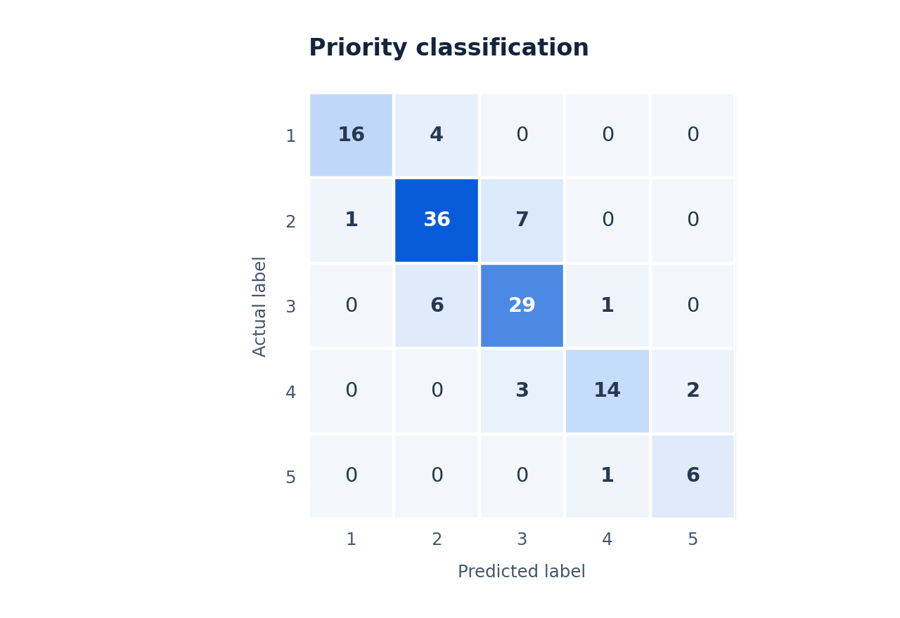
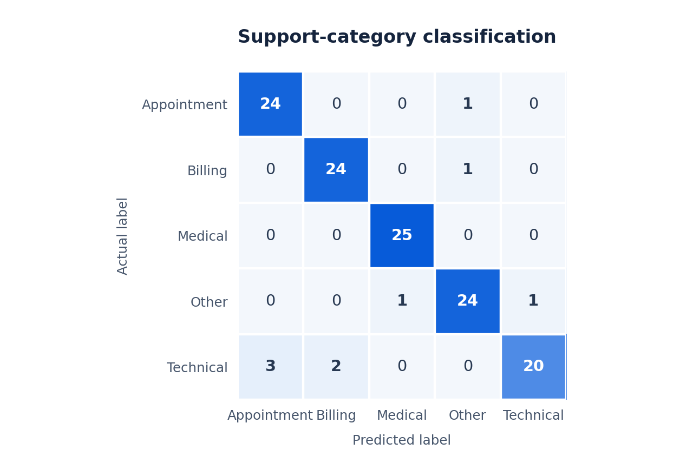

Project report · Natural language processing
DiaCare NLP
Support Message Classification
Suggesting a support category and priority, with evidence a reviewer can inspect.
Technologies Python · TF-IDF · Linear SVM · scikit-learn · FastAPI · Docker
Project overview
I built a standalone support-message classification prototype using 630 synthetic messages. It suggests one of five categories—appointment, billing, medical, technical issue, or other—and a priority label from 1 to 5 for human review.
My work connects text preprocessing, two separately trained classifiers, a deterministic keyword override, and a FastAPI service. The repository includes training code, saved models, evaluation results, API tests, and Docker packaging.
How I built it
- Represent the message text. Convert words and two-word phrases into TF-IDF features, capped at 20,000. Keep the vectoriser inside each model pipeline so outer cross-validation folds fit their own vocabulary.
- Learn category and priority separately. Train linear SVM classifiers with sigmoid probability calibration; apply balanced class weights to priority. Each target uses its own stratified 20% holdout and five-fold cross-validation on its remaining training pool, with seed 42.
- Expose a reviewable response. Check a short list of keyword patterns before model inference. A match returns category “medical” and priority 5; otherwise, the API returns both model predictions and indicative terms. A health endpoint reports whether the model artifacts loaded.
Engineering decisions
Separate classifiers let topic and priority be evaluated independently instead of assuming that a message’s subject determines its urgency. The keyword override is visible in the response through a gate_triggered field, so a reviewer can distinguish a rule match from model output.
Model loading is checked separately from the service being reachable: the health response includes models_loaded, and requests without available models return an explicit error rather than a fabricated prediction. Indicative terms support inspection, while the full prediction and rule status remain available in the JSON response.
Results
The category model correctly labelled 117 of 126 holdout messages (92.9%); the priority model correctly labelled 101 of 126 (80.2%) on its separately sampled holdout. These are individual model results, not the accuracy of getting both answers right on the same messages or of the combined keyword-and-model API.
Priority classification made more errors than category classification. Six of seven priority-5 examples were classified correctly, with one assigned priority 4; that small sample cannot establish reliable handling of rare urgent messages.
| Measure | Category | Priority |
|---|---|---|
| Correct labels | 117 / 126 | 101 / 126 |
| Macro F1 | 0.927 | 0.808 |
| Accuracy | 92.9% | 80.2% |


Figure 1. Priority classification errors
Generated from the published evaluation counts. Rows are actual labels and columns are model predictions, before the API keyword override. Select the figure to enlarge.
Supporting evidence: category errors and API interpretation


Figure 2. Support-category classification errors
Technical-issue recall was 80%: 20 of 25 examples were correct, with three assigned appointment and two billing. This was the lowest category recall.
Macro F1 weights classes equally. Five-fold training-pool macro F1 was 0.934 ± 0.033 for category and 0.816 ± 0.022 for priority. These folds share the dataset’s synthetic wording and repetition limits.
The API confidence field takes the larger of the two models’ maximum probabilities; it is not joint confidence in both predictions. A keyword match returns a fixed 0.99, not a learned probability. Returned terms use coefficients from one calibrated ensemble member and are indicative, rather than a complete explanation of the ensemble output.
Data, limitations & next steps
The category-balanced dataset contains no patient records. Its 630 rows include 613 distinct texts after lowercasing and trimming; in each target’s split, seven holdout rows repeat text also present in training. The reported scores describe this synthetic experiment, rather than generalisation to unseen patient language or real support traffic.
The keyword gate covers a small set of phrases and does not establish clinical safety. This prototype is not a diagnostic or autonomous triage system, and its scores do not measure health outcomes or real-world routing quality.
Takeaway & next step. A service can expose clear predictions without having enough evidence to trust every routing decision. Next, I would group duplicate and paraphrased messages before splitting, evaluate category and priority together on a shared representative holdout, and test negation, unfamiliar wording, and rare high-priority cases with qualified reviewers.
Technical evidence: training & split implementation · full metrics & confusion matrices · API implementation · API tests · dataset notes.